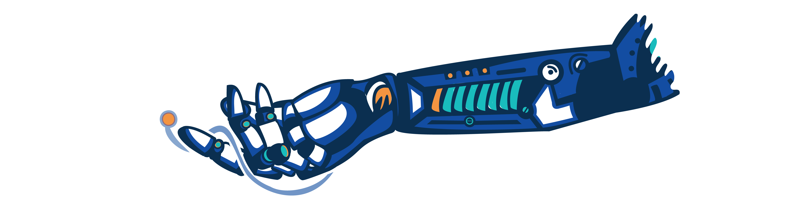

When more people can build, more problems get solved. Cuando más personas pueden construir, más problemas se resuelven.
The constraint shifts from "can we build it?" to "can we build it right?" — and that's exactly where we work. Faimly-T builds the tools and systems that democratize great software, so the people who make it all work become the most powerful version of themselves. La restricción cambia de "¿podemos construirlo?" a "¿podemos construirlo bien?", y es precisamente ahí donde intervenimos. Faimly-T desarrolla las herramientas y los sistemas que democratizan el software de alta calidad, para que las personas que hacen que todo funcione se conviertan en la versión más poderosa de sí mismas.
Almost everyone today — not just developers — carries some version of the same question: what happens to my work when AI can do more of it? It's a fair question. It deserves a real answer. Here is ours. Casi todo el mundo hoy —no solo los desarrolladores— se hace alguna versión de la misma pregunta: ¿qué pasará con mi trabajo cuando la IA pueda realizar gran parte de él? Es una pregunta justa y merece una respuesta real. Aquí está la nuestra.
When the ability to build becomes more accessible, the number of things that get built doesn't stay the same. It explodes. More ideas become real. More systems come into existence. And every one of those systems needs someone who understands what makes it good — not just functional, but sound, secure, maintainable, built to last. Cuando la capacidad de construir se vuelve más accesible, la cantidad de cosas que se construyen no se mantiene igual. Explota. Más ideas se hacen realidad. Más sistemas cobran vida. Y cada uno de esos sistemas necesita a alguien que entienda qué lo hace bueno —no solo funcional, sino sólido, seguro, mantenible y construido para durar.
AI doesn't diminish what humans bring to their work. It expands the surface of everything that needs to be done — and makes the people who do it well more essential than ever. La IA no disminuye lo que los humanos aportan a su trabajo. Expande la superficie de todo lo que debe hacerse —y hace que las personas que lo hacen bien sean más esenciales que nunca.
For decades, engineers have known what great looks like: clean architecture, security by design, proper documentation, systems that hold up under pressure. AI absorbs the coordination cost that made the right version unaffordable. For the first time, the version you always knew you should build is the version you can actually ship. Durante décadas, los ingenieros han sabido cómo se ve un gran software: arquitectura limpia, seguridad por diseño, documentación adecuada, sistemas que resisten bajo presión. La IA absorbe el costo de coordinación que hacía inasequible la versión correcta. Por primera vez, la versión que siempre supiste que debías construir es la versión que realmente puedes entregar.
Every product is a different layer of the same superpower — humans, made more capable by AI. Cada producto es una capa diferente del mismo superpoder: los seres humanos, potenciados por la IA.
Craft is our governed software-delivery system. Your team builds on their own AI tools. We run the release gate: full DDD alignment, SOLID architecture review, security scan, UX quality check, documentation — applied to every release, by default. Craft es nuestro sistema de entrega de software gobernado. Tu equipo construye usando sus propias herramientas de IA. Nosotros ejecutamos el filtro de entrega: alineación completa de DDD, revisión de arquitectura SOLID, escaneo de seguridad, control de calidad de UX y documentación; todo esto aplicado a cada lanzamiento por defecto.
